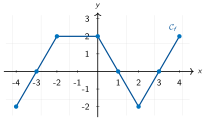

Automatismes N04 — Fonctions : registres et lectures graphiques
24 questions sans calculatrice, réparties en 4 séries courtes à faire en quelques minutes. Chercher d'abord seul, puis ouvrir le corrigé.
Série A — Formule, image et antécédent
Consigne. Utiliser la notation fonctionnelle avec précision.
- Soit \(f(x)=2x+3\). Calculer \(f(4)\).
- Soit \(f(x)=2x+3\). Déterminer l'antécédent de \(9\).
- Soit \(g(x)=x^2-4\). Calculer \(g(-2)\).
- Compléter : si \(h(5)=12\), alors \(12\) est l'… de \(5\).
- Compléter : si \(h(5)=12\), alors \(5\) est un … de \(12\).
- Le coût de \(q\) articles est \(C(q)=12q+150\). Calculer \(C(10)\).
Coup de pouce
Conseils
- Pour une image, remplacer \(x\).
- Pour un antécédent, résoudre une équation.
- Respecter le vocabulaire.
Vigilance
Une image est une valeur obtenue ; un antécédent est une valeur de départ.
Corrigé de la série A
- \(f(4)=\)
\(2\times4+3=\) \(\boxed{11}\). - \(2x+3=9\Longleftrightarrow\)
\( x=3\) : antécédent \(\boxed{3}\). - \(g(-2)=(-2)^2-4=\boxed{0}\).
- \(12\) est l'image de \(5\).
- \(5\) est un antécédent de \(12\).
- \(C(10)=\)
\(12\times10+150=\) \(\boxed{270}\) €.
Série B — Lectures graphiques
Consigne. Lire graphiquement. Les réponses exactes sont visibles sur la courbe.

- Lire \(f(-4)\).
- Lire \(f(0)\).
- Donner les antécédents de \(0\).
- Résoudre \(f(x)=2\).
- Sur quels intervalles \(f(x)>0\) ?
- Donner un intervalle où \(f\) est décroissante.
Coup de pouce
Conseils
Image : lecture verticale. Antécédent : lecture horizontale.
Vigilance
Pour \(f(x)>0\), repérer les portions au-dessus de l'axe des abscisses.
Corrigé de la série B
- \(f(-4)=\boxed{-2}\).
- \(f(0)=\boxed{2}\).
- \(\boxed{\{-3;1;3\}}\).
- \(\boxed{[-2;0]\cup\{4\}}\).
- \(\boxed{]-3;1[\cup]3;4]}\).
- Par exemple \(\boxed{[0;2]}\).
Série C — Passer d'un registre à l'autre
Consigne. On considère le coût \(C(x)=5x+120\), en euros, pour produire \(x\) objets.
- Calculer \(C(20)\).
- Déterminer l'antécédent de \(220\).
- Interpréter la phrase \(C(30)=270\).
- Réduire \(3x+4x-5\).
- Résoudre \((x-2)(x+5)=0\).
- Un prix de \(200\) € augmente de \(10\,\%\). Nouveau prix ?
Coup de pouce
Conseils
- Traduire chaque question dans le bon registre.
- Conserver les unités.
- Réactiver les méthodes précédentes.
Vigilance
Une égalité fonctionnelle doit être interprétée dans le contexte, pas seulement calculée.
Corrigé de la série C
- \(C(20)=\)
\(5\times20+120=\) \(\boxed{220}\) €. - \(5x+120=220\Longleftrightarrow\)
\( x=\boxed{20}\). - Produire \(\boxed{30}\) objets coûte \(\boxed{270}\) €.
- \(3x+4x-5=\boxed{7x-5}\).
- \(x=2\) ou \(x=-5\), donc \(\mathscr S=\)
\(\boxed{\{-5;2\}}\). - \(200\times1{,}10=\)
\(\boxed{220}\) €.
Série D — Type épreuve anticipée – QCM cumulatif
Consigne. Pour chaque question, choisir une seule réponse. Aucune justification n'est demandée.
- Si \(f(3)=7\), alors :
- \(3\) est l'image de \(7\)
- \(7\) est l'image de \(3\)
- \(f(7)=3\)
- \(3=7\)
- Pour \(f(x)=x^2+1\), \(f(-2)\) vaut :
- \(-3\)
- \(-5\)
- \(3\)
- \(5\)
- Les solutions de \((x-4)(x+1)=0\) sont :
- \(4\) et \(-1\)
- \(-4\) et \(1\)
- \(4\) seulement
- \(-1\) seulement
- Le signe de \(2x-6\) pour \(x=1\) est :
- positif
- nul
- négatif
- indéterminé
- Une hausse de \(5\,\%\), puis de \(10\,\%\), donne le coefficient :
- \(1{,}15\)
- \(1{,}155\)
- \(0{,}95\)
- \(1{,}50\)
- \(30\,\%\) de \(90\) vaut :
- \(18\)
- \(27\)
- \(30\)
- \(60\)
Coup de pouce
Conseils
- Identifier le registre : formule, équation ou pourcentage.
- Une seule réponse est correcte.
- Contrôler les signes.
Vigilance
Dans \(f(-2)\), les parenthèses autour de \(-2\) sont indispensables.
Corrigé de la série D
- Réponse B : \(7\) est l'image de \(3\).
- Réponse D : \((-2)^2+1=5\).
- Réponse A : produit nul.
- Réponse C : \(2\times1-6=-4\).
- Réponse B : \(1{,}05\times1{,}10=\)
\(1{,}155\). - Réponse B : \(0{,}30\times90=27\).
Ces questions reprennent le diaporama d'automatismes N04 utilisé en classe. Licence CC BY-NC-SA 4.0 : réutilisation libre en classe, en citant la source.